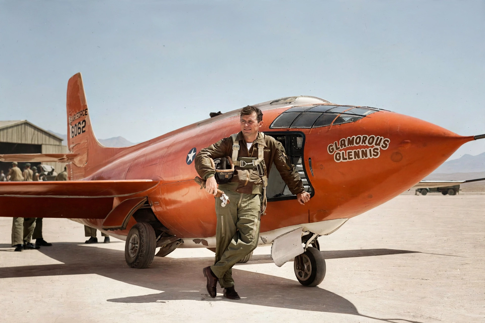

Chuck Yeager
From Wikipedia, the free encyclopedia

Yeager and the Bell X-1.Charles Elwood \'Chuck\' Yeager (1923–2020) was a United States Air Force officer and test pilot who, on 14 October 1947, became the first pilot in level flight to exceed the speed of sound, flying the rocket-powered Bell X-1 over the Mojave Desert. A Second World War ace (11.5 victories, shot down over France and rescued by the Resistance, then controversially returned to combat), Yeager embodied the test-pilot culture celebrated in Tom Wolfe\'s The Right Stuff.
Breaking the barrier
Many doubted an aircraft could pass Mach 1 because of violent buffeting and control loss reported near the barrier. Dropped from a B-29 at 45,000 ft, the X-1 Glamorous Glennis (named for Yeager\'s wife) reached Mach 1.06 despite Yeager flying with two broken ribs from a horse-riding fall, concealed from his superiors. The achievement was classified for months.
Later career
Yeager set further records (Mach 2.44 in the X-1A, 1953, surviving a violent loss of control), commanded squadrons and a wing in Vietnam-era service, and retired as a brigadier general in 1975. He remained a public symbol of aviation, flying an F-15 past Mach 1 on the 50th anniversary in 1997 and, aged 89, again in 2012. NASA\'s exclusion of military test pilots without degrees initially kept him from astronaut selection, a famous slight.